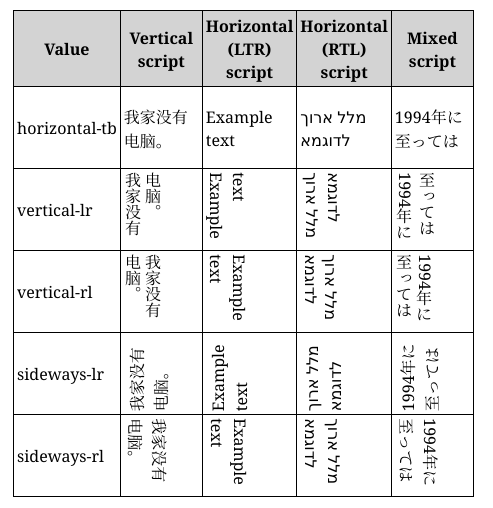

The writing-mode CSS property sets whether lines of text are laid out horizontally or vertically, as well as the direction in which blocks progress. When set for an entire document, it should be set on the root element (html element for HTML documents).
This property specifies the block flow direction, which is the direction in which block-level containers are stacked, and the direction in which inline-level content flows within a block container. Thus, it also determines the ordering of block-level content.
/* Keyword values */ writing-mode: horizontal-tb; writing-mode: vertical-rl; writing-mode: vertical-lr; /* Global values */ writing-mode: inherit; writing-mode: initial; writing-mode: unset;
The writing-mode property is specified as one of the values listed below. The flow direction in horizontal scripts is also affected by the directionality of that script, either left-to-right (ltr, like English and most other languages) or right-to-left (rtl, like Hebrew or Arabic).
horizontal-tbltr scripts, content flows horizontally from left to right. For rtl scripts, content flows horizontally from right to left. The next horizontal line is positioned below the previous line.vertical-rlltr scripts, content flows vertically from top to bottom, and the next vertical line is positioned to the left of the previous line. For rtl scripts, content flows vertically from bottom to top, and the next vertical line is positioned to the right of the previous line.vertical-lrltr scripts, content flows vertically from top to bottom, and the next vertical line is positioned to the right of the previous line. For rtl scripts, content flows vertically from bottom to top, and the next vertical line is positioned to the left of the previous line.sideways-rl {{experimental_inline}}ltr scripts, content flows vertically from bottom to top. For rtl scripts, content flows vertically from top to bottom. All the glyphs, even those in vertical scripts, are set sideways toward the right.sideways-lr {{experimental_inline}}ltr scripts, content flows vertically from top to bottom. For rtl scripts, content flows vertically from bottom to top. All the glyphs, even those in vertical scripts, are set sideways toward the left.lr {{deprecated_inline}}horizontal-tb instead.lr-tb {{deprecated_inline}}horizontal-tb instead.rl {{deprecated_inline}}horizontal-tb instead.tb {{deprecated_inline}}vertical-lr instead.tb-lr {{deprecated_inline}}vertical-lr instead.tb-rl {{deprecated_inline}}vertical-rl instead.{{CSSInfo}}
This example demonstrates all of the writing modes, showing each with text in various languages.
The HTML is a {{HTMLElement("table")}} with each writing mode in a row with a column showing text in various scripts using that writing mode.
<table>
<tr>
<th>Value</th>
<th>Vertical script</th>
<th>Horizontal (LTR) script</th>
<th>Horizontal (RTL) script</th>
<th>Mixed script</th>
</tr>
<tr>
<td>horizontal-tb</td>
<td class="example Text1"><span>我家没有电脑。</span></td>
<td class="example Text1"><span>Example text</span></td>
<td class="example Text1"><span>מלל ארוך לדוגמא</span></td>
<td class="example Text1"><span>1994年に至っては</span></td>
</tr>
<tr>
<td>vertical-lr</td>
<td class="example Text2"><span>我家没有电脑。</span></td>
<td class="example Text2"><span>Example text</span></td>
<td class="example Text2"><span>מלל ארוך לדוגמא</span></td>
<td class="example Text2"><span>1994年に至っては</span></td>
</tr>
<tr>
<td>vertical-rl</td>
<td class="example Text3"><span>我家没有电脑。</span></td>
<td class="example Text3"><span>Example text</span></td>
<td class="example Text3"><span>מלל ארוך לדוגמא</span></td>
<td class="example Text3"><span>1994年に至っては</span></td>
</tr>
<tr>
<td>sideways-lr</td>
<td class="example Text4"><span>我家没有电脑。</span></td>
<td class="example Text4"><span>Example text</span></td>
<td class="example Text4"><span>מלל ארוך לדוגמא</span></td>
<td class="example Text4"><span>1994年に至っては</span></td>
</tr>
<tr>
<td>sideways-rl</td>
<td class="example Text5"><span>我家没有电脑。</span></td>
<td class="example Text5"><span>Example text</span></td>
<td class="example Text5"><span>מלל ארוך לדוגמא</span></td>
<td class="example Text5"><span>1994年に至っては</span></td>
</tr>
</table>
Some preparatory CSS just to make things look a little better:
table {
border-collapse:collapse;
}
td, th {
border: 1px black solid; padding: 3px;
}
th {
background-color: lightgray;
}
.example {
height:75px;
width:75px;
}
The CSS that adjusts the directionality of the content looks like this:
.example.Text1 span, .example.Text1 {
writing-mode: horizontal-tb;
-webkit-writing-mode: horizontal-tb;
-ms-writing-mode: horizontal-tb;
}
.example.Text2 span, .example.Text2 {
writing-mode: vertical-lr;
-webkit-writing-mode: vertical-lr;
-ms-writing-mode: vertical-lr;
}
.example.Text3 span, .example.Text3 {
writing-mode: vertical-rl;
-webkit-writing-mode: vertical-rl;
-ms-writing-mode: vertical-rl;
}
.example.Text4 span, .example.Text4 {
writing-mode: sideways-lr;
-webkit-writing-mode: sideways-lr;
-ms-writing-mode: sideways-lr;
}
.example.Text5 span, .example.Text5 {
writing-mode: sideways-rl;
-webkit-writing-mode: sideways-rl;
-ms-writing-mode: sideways-rl;
}
This image shows what the output should look like, in case your browser's support for writing-mode is incomplete:

{{EmbedLiveSample("Using_multiple_writing_modes", 400, 500)}}
| Specification | Status | Comment |
|---|---|---|
| {{SpecName("CSS4 Writing Modes", "#block-flow", "writing-mode")}} | {{Spec2("CSS4 Writing Modes")}} | Add sideways-lr and sideways-rl |
| {{SpecName("CSS3 Writing Modes", "#block-flow", "writing-mode")}} | {{Spec2("CSS3 Writing Modes")}} | Initial definition |
{{Compat}}
writing-mode attribute